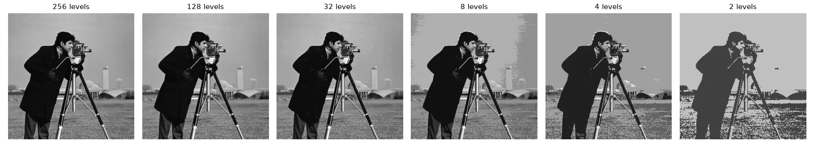
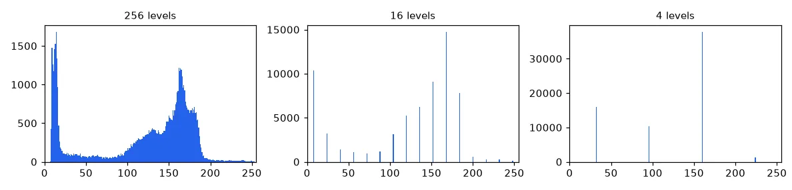
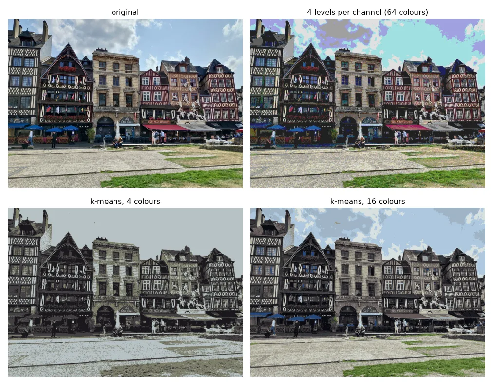
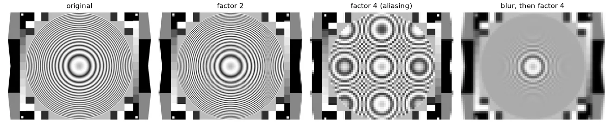
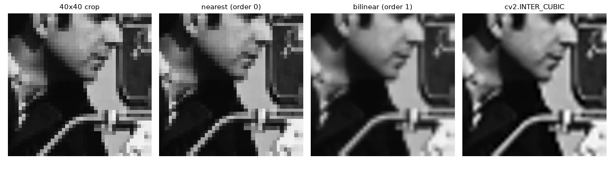

Two discretisations#
A camera turns a continuous light field into numbers in two steps:
- Sampling — the scene is measured only on a grid of pixels. Fewer pixels, less detail.
- Quantization — each measurement is rounded to one of \(L\) levels. With 8 bits, \(L = 256\).
Both lose information, and both create artefacts — structures in the image that were not in the scene.
Uniform quantization#
To go from 256 levels to \(N\), split \([0, 255]\) into \(N\) bins of width \(\Delta = 256 / N\) and replace every value by the centre of its bin:
def quantize(img, n_levels):
"""Uniform scalar quantization of a uint8 image to n_levels gray levels."""
step = 256 // n_levels
# integer division puts every pixel in a bin, then we move it to the bin centre
return ((img // step) * step + step // 2).astype(np.uint8)

Histograms#
The histogram \(h(k)\) counts the pixels with value \(k\). On the x-axis go all possible values (0–255), even absent ones; the bars add up to the number of pixels. It is the single most useful diagnostic in image processing — lesson 04 is built on it.
def histogram(img):
"""Count how many pixels have each of the 256 possible values."""
hist = np.zeros(256, dtype=np.int64)
for value in img.ravel():
hist[value] += 1
return hist
# Same result without a Python loop:
# np.bincount(img.ravel(), minlength=256)

Quantizing colour#
Quantizing each channel to 4 levels gives \(4^3 = 64\) fixed colours, chosen without looking at the image. A much better palette comes from the image itself: run k-means on the pixel colours and replace each pixel by its cluster centre. Clustering in L*a*b* (a perceptually uniform space, see lesson 10) makes "close" mean "looks similar".
def color_quantize(img_bgr, n_colors):
"""Keep the n_colors most representative colours (k-means in L*a*b*)."""
h, w = img_bgr.shape[:2]
lab = cv2.cvtColor(img_bgr, cv2.COLOR_BGR2LAB).reshape(-1, 3)
km = MiniBatchKMeans(n_clusters=n_colors, n_init=3, random_state=0)
labels = km.fit_predict(lab)
quant = km.cluster_centers_.astype(np.uint8)[labels].reshape(h, w, 3)
return cv2.cvtColor(quant, cv2.COLOR_LAB2BGR)

Subsampling and aliasing#
Keeping one pixel out of \(k\) is a one-liner with slicing:
mire = U.imread("basics/mire.png", cv2.IMREAD_GRAYSCALE)
def subsample_loop(img, factor):
h, w = img.shape
out = np.zeros(((h + factor - 1) // factor, (w + factor - 1) // factor), img.dtype)
for i in range(out.shape[0]):
for j in range(out.shape[1]):
out[i, j] = img[i * factor, j * factor]
return out
def subsample(img, factor):
return img[::factor, ::factor] # same thing with slicing
blurred = cv2.GaussianBlur(mire, (0, 0), sigmaX=2) # low-pass before decimating
On a test chart with increasingly fine circles, the result is not just "less sharp" — new, fake patterns appear. This is aliasing: by the Nyquist–Shannon theorem, a pattern can be represented only if we take at least two samples per period. Finer patterns fold back as false, coarser ones. The cure is to remove those frequencies before subsampling with a low-pass filter (a blur), which is exactly what cv2.pyrDown and cv2.resize(..., interpolation=cv2.INTER_AREA) do.

Shrinking: average the block#
When shrinking by a factor \(s < 1\), each output pixel covers a block of \(1/s \times 1/s\) input pixels. Averaging that block is a box low-pass filter plus subsampling in one go:
def downscale_area(img, scale):
"""Shrink by `scale` < 1: each output pixel is the mean of the block it covers."""
new_h, new_w = int(img.shape[0] * scale), int(img.shape[1] * scale)
out = np.zeros((new_h, new_w) + img.shape[2:], np.uint8)
step_y, step_x = img.shape[0] / new_h, img.shape[1] / new_w
for i in range(new_h):
for j in range(new_w):
y0, y1 = int(i * step_y), int((i + 1) * step_y)
x0, x1 = int(j * step_x), int((j + 1) * step_x)
out[i, j] = img[y0:y1, x0:x1].mean(axis=(0, 1))
return out
Our function matches cv2.resize(…, interpolation=cv2.INTER_AREA) to within one gray level.
Enlarging: interpolation#
Enlarging needs values between the known pixels. For an output pixel \((i, j)\) we compute where it falls in the source, \((y, x) = (i/s, j/s)\), generally between four pixels.
Order 0 — nearest neighbour. Take the closest one. Fast, but blocky.
Order 1 — bilinear. Interpolate linearly in \(x\), then in \(y\). With \(d_x, d_y \in [0, 1)\) the fractional parts:
def upscale_nearest(img, scale):
"""Order-0 interpolation: copy the closest source pixel."""
new_h, new_w = int(img.shape[0] * scale), int(img.shape[1] * scale)
out = np.zeros((new_h, new_w) + img.shape[2:], img.dtype)
for i in range(new_h):
for j in range(new_w):
y = min(round(i / scale), img.shape[0] - 1)
x = min(round(j / scale), img.shape[1] - 1)
out[i, j] = img[y, x]
return out
def upscale_bilinear(img, scale):
"""Order-1 interpolation: weighted mean of the 4 surrounding pixels."""
src = img.astype(np.float32)
new_h, new_w = int(img.shape[0] * scale), int(img.shape[1] * scale)
out = np.zeros((new_h, new_w) + img.shape[2:], np.float32)
for i in range(new_h):
for j in range(new_w):
y, x = i / scale, j / scale # position in the source image
y0, x0 = int(y), int(x)
y1, x1 = min(y0 + 1, img.shape[0] - 1), min(x0 + 1, img.shape[1] - 1)
dy, dx = y - y0, x - x0 # fractional parts, in [0, 1)
out[i, j] = ((1 - dy) * (1 - dx) * src[y0, x0] + (1 - dy) * dx * src[y0, x1]
+ dy * (1 - dx) * src[y1, x0] + dy * dx * src[y1, x1])
return np.clip(out, 0, 255).astype(np.uint8)

A bug I made the first time
My first bilinear version computed dx = x1 - x0, which is always 1 — so every pixel was a copy of a corner. The weights must use the fractional part of the source position, dx = x - int(x).
In practice#
small = cv2.resize(img, None, fx=0.25, fy=0.25, interpolation=cv2.INTER_AREA) # shrink
big = cv2.resize(img, (w * 3, h * 3), interpolation=cv2.INTER_LINEAR) # enlarge
Use INTER_AREA to shrink, INTER_LINEAR or INTER_CUBIC to enlarge, and INTER_NEAREST for label images and masks, where inventing in-between values makes no sense.
Exercises#
- Plot the number of distinct values of
quantize(gray, N)for \(N = 2 \dots 128\). Is it always \(N\)? - Implement
pyr_down(img)= Gaussian blur + keep one pixel out of two, apply it twice onmire.pngand compare withsubsample(mire, 4). - Vectorise
upscale_bilinearwithnp.meshgrid(no loops) and check that the output is identical.